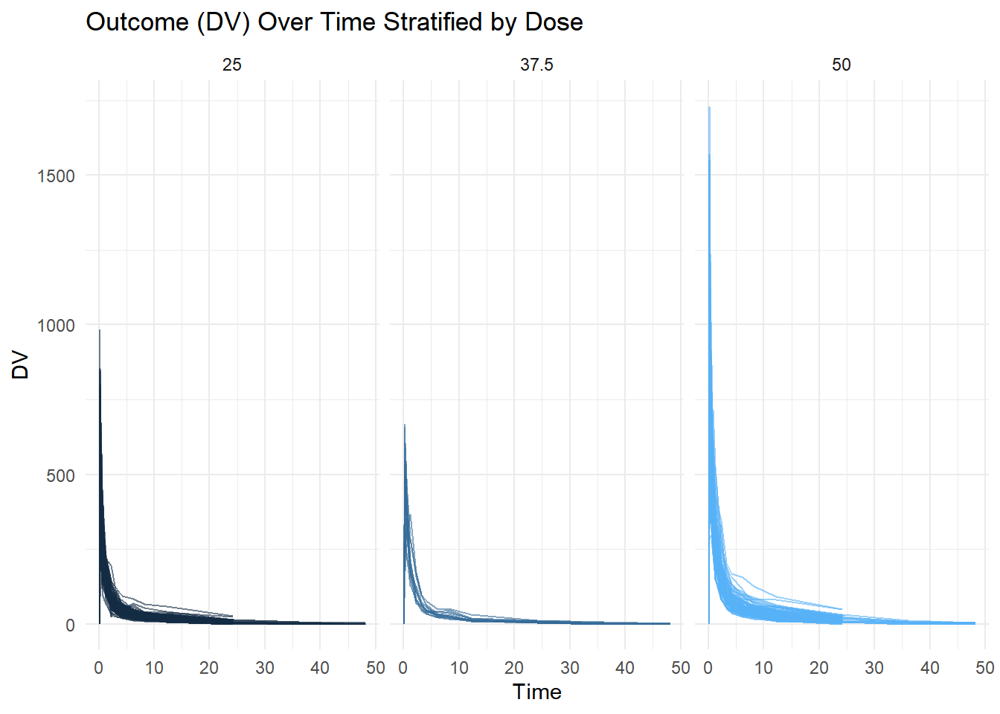
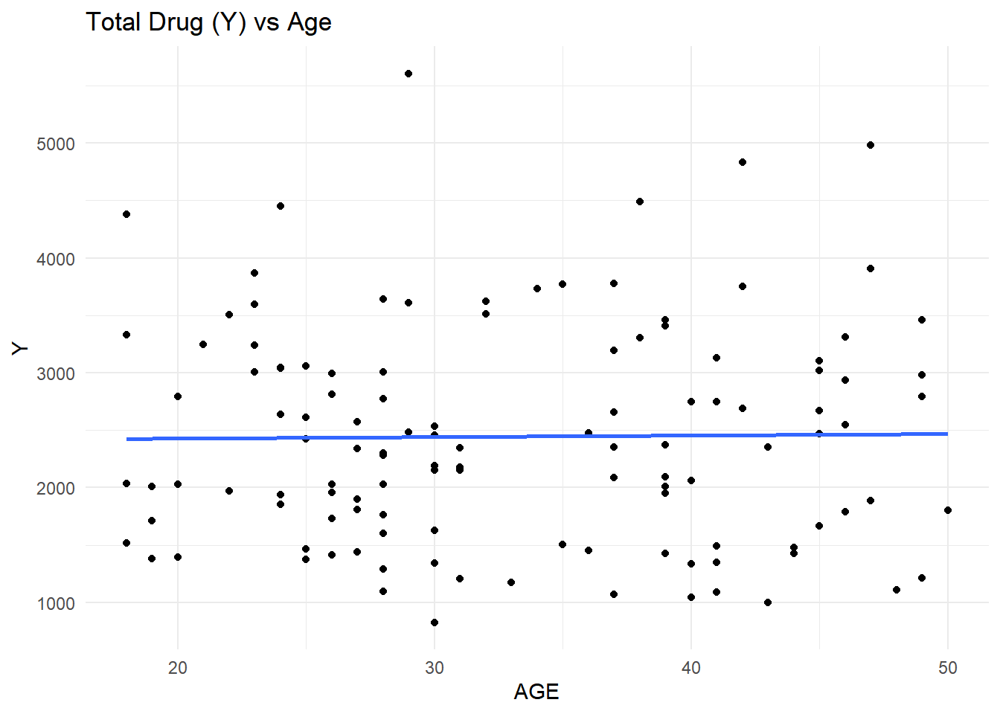
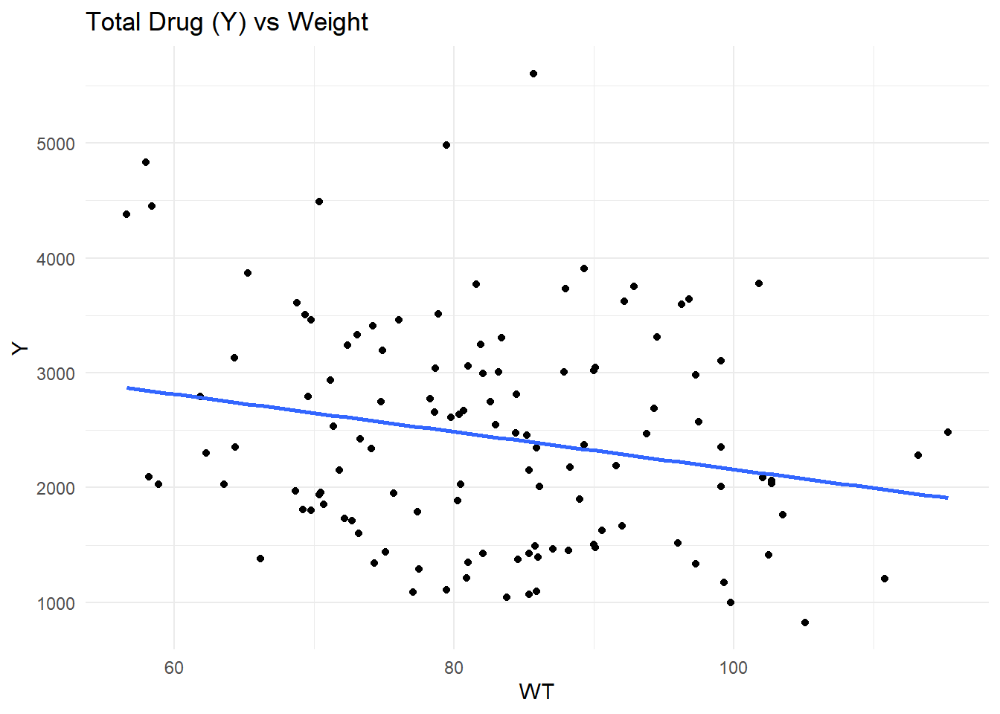
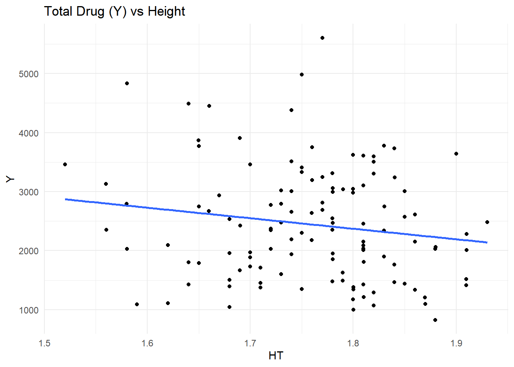
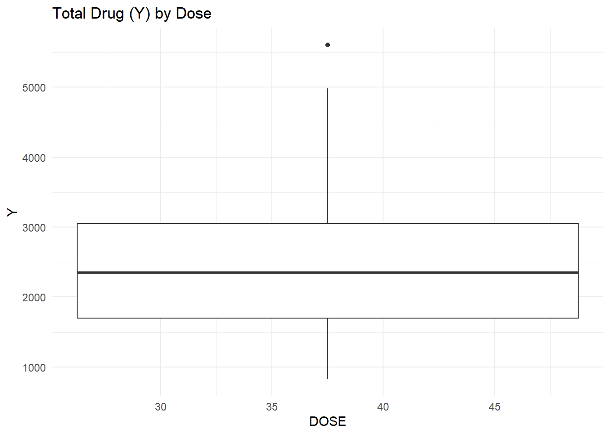
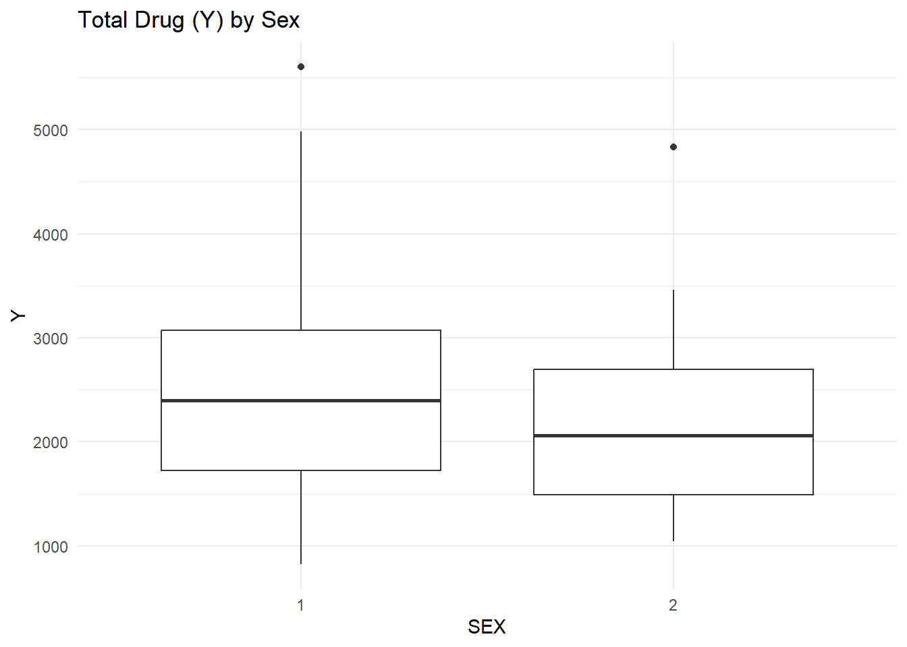

The following objects are masked from 'package:stats':
filter, lag
The following objects are masked from 'package:base':
intersect, setdiff, setequal, union
library(here)
here() starts at C:/AustinHill-Portfolio-
# Load the CSV fileMavoglurant_data <-read_csv(here("fitting-exercise", "Mavoglurant_A2121_nmpk.csv"))
Rows: 2678 Columns: 17
── Column specification ────────────────────────────────────────────────────────
Delimiter: ","
dbl (17): ID, CMT, EVID, EVI2, MDV, DV, LNDV, AMT, TIME, DOSE, OCC, RATE, AG...
ℹ Use `spec()` to retrieve the full column specification for this data.
ℹ Specify the column types or set `show_col_types = FALSE` to quiet this message.
# View first rowshead(data)
1 function (..., list = character(), package = NULL, lib.loc = NULL,
2 verbose = getOption("verbose"), envir = .GlobalEnv, overwrite = TRUE)
3 {
4 fileExt <- function(x) {
5 db <- grepl("\\\\.[^.]+\\\\.(gz|bz2|xz)$", x)
6 ans <- sub(".*\\\\.", "", x)
# Check column typesglimpse(data)
function (..., list = character(), package = NULL, lib.loc = NULL, verbose = getOption("verbose"),
envir = .GlobalEnv, overwrite = TRUE)
# Faceted Plot with Different Color per Doseggplot(Mavoglurant_data, aes(x = TIME, y = DV, group = ID, color = DOSE)) +geom_line(alpha =0.6) +facet_wrap(~ DOSE) +labs(title ="Outcome (DV) Over Time Stratified by Dose",x ="Time",y ="DV",color ="Dose" ) +theme_minimal() +theme(legend.position ="none")

# Keep only observations where OCC == 1Mavoglurant_data_occ1 <- Mavoglurant_data %>%filter(OCC ==1)
# Check that only OCC = 1 remainsunique(Mavoglurant_data_occ1$OCC)
[1] 1
# Compare number of rows before and after filteringnrow(Mavoglurant_data)
[1] 2678
nrow(Mavoglurant_data_occ1)
[1] 1665
# Remove observations where TIME == 0data_no_time0 <- Mavoglurant_data_occ1 %>%filter(TIME !=0)# Compute sum of DV for each individualY_df <- data_no_time0 %>%group_by(ID) %>%summarize(Y =sum(DV, na.rm =TRUE)) %>%ungroup()
# Create Dataset with TIME == 0 Onlytime0_df <- Mavoglurant_data_occ1 %>%filter(TIME ==0)
# Join the Two Data Framesfinal_df <-left_join(time0_df, Y_df, by ="ID")
# Convert RACE and SEX to factors and keep only selected variablesanalysis_df <- final_df %>%mutate(RACE =as.factor(RACE),SEX =as.factor(SEX) ) %>%select(Y, DOSE, AGE, SEX, RACE, WT, HT)
# Counts for Categorical Variablestable(analysis_df$SEX)
1 2
104 16
table(analysis_df$RACE)
1 2 7 88
74 36 2 8
table(analysis_df$DOSE)
25 37.5 50
59 12 49
# Scatterplots and Boxplots# Y vs Continuous Predictors# Y vs AGEggplot(analysis_df, aes(x = AGE, y = Y)) +geom_point() +geom_smooth(method ="lm", se =FALSE) +theme_minimal() +labs(title ="Total Drug (Y) vs Age")
`geom_smooth()` using formula = 'y ~ x'

# Y vs WTggplot(analysis_df, aes(x = WT, y = Y)) +geom_point() +geom_smooth(method ="lm", se =FALSE) +theme_minimal() +labs(title ="Total Drug (Y) vs Weight")
`geom_smooth()` using formula = 'y ~ x'

# Y vs HTggplot(analysis_df, aes(x = HT, y = Y)) +geom_point() +geom_smooth(method ="lm", se =FALSE) +theme_minimal() +labs(title ="Total Drug (Y) vs Height")
`geom_smooth()` using formula = 'y ~ x'

# Y vs Categorical Predictors# Y by DOSEggplot(analysis_df, aes(x = DOSE, y = Y)) +geom_boxplot() +theme_minimal() +labs(title ="Total Drug (Y) by Dose")
Warning: Orientation is not uniquely specified when both the x and y aesthetics are
continuous. Picking default orientation 'x'.
Warning: Continuous x aesthetic
ℹ did you forget `aes(group = ...)`?

# Y by SEXggplot(analysis_df, aes(x = SEX, y = Y)) +geom_boxplot() +theme_minimal() +labs(title ="Total Drug (Y) by Sex")

# Y by RACEggplot(analysis_df, aes(x = RACE, y = Y)) +geom_boxplot() +theme_minimal() +labs(title ="Total Drug (Y) by Race")
# Ensure categorical variables are coded as factorsanalysis_df <- analysis_df %>%mutate(DOSE =as.factor(DOSE),SEX =as.factor(SEX),RACE =as.factor(RACE) )set.seed(123) # Ensures you get the same split every time you run
# Create 10-fold cross-validation objectcv_folds <-vfold_cv( analysis_df, # datasetv =10, # number of foldsstrata = DOSE # keep dose distribution balanced across folds)cv_folds_sex <-vfold_cv( # Create 10-fold cross-validation splits for the SEX models analysis_df, # Data to split into foldsv =10, # Number of foldsstrata = SEX # Keep SEX class balance similar across folds)
CONTINUOUS OUTCOME (Y)- LINEAR REGRESSION
# Linear regression models (Outcome = Y)# Model specificationlm_spec <-linear_reg() %>%# Define a linear regression modelset_engine("lm") # Use base R's lm() function to fit the model
# Model 1: Predict Y using DOSErec_y_dose <-recipe( # Create preprocessing recipe Y ~ DOSE, # Define formula: Y predicted by DOSEdata = analysis_df # Use the full dataset to define variables) %>%step_dummy(all_nominal_predictors()) # Convert categorical predictors (DOSE) into dummy variableswf_y_dose <-workflow() %>%# Create a workflow objectadd_recipe(rec_y_dose) %>%# Add preprocessing steps from the recipeadd_model(lm_spec) # Add the linear regression modelres_y_dose <-fit_resamples( # Fit model repeatedly across cross-validation folds wf_y_dose, # Workflow containing model and preprocessingresamples = cv_folds, # Use the 10-fold cross-validation objectmetrics =metric_set(rmse, rsq) # Compute RMSE and R-squared performance metrics)metrics_y_dose <-collect_metrics(res_y_dose) # Collect the averaged performance metrics from all folds
# Model 2: Predict Y using all predictorsrec_y_all <-recipe( # Create recipe for full model Y ~ DOSE + AGE + SEX + RACE + WT + HT, # Predict Y using all listed predictorsdata = analysis_df # Use dataset to determine variable types) %>%step_dummy(all_nominal_predictors()) # Convert categorical variables into dummy indicatorswf_y_all <-workflow() %>%# Create workflow for full modeladd_recipe(rec_y_all) %>%# Add preprocessing recipeadd_model(lm_spec) # Add linear regression model specificationres_y_all <-fit_resamples( # Perform cross-validated model fitting wf_y_all, # Workflow containing recipe and modelresamples = cv_folds, # Use the previously defined 10 foldsmetrics =metric_set(rmse, rsq) # Evaluate using RMSE and R-squared)metrics_y_all <-collect_metrics(res_y_all) # Extract averaged cross-validation results
# Printing results for linear regression modelscat("\n Linear Regression Results (Cross-Validation) \n")
Linear Regression Results (Cross-Validation)
cat("\nModel 1: Y ~ DOSE\n")
Model 1: Y ~ DOSE
print(metrics_y_dose)
# A tibble: 2 × 6
.metric .estimator mean n std_err .config
<chr> <chr> <dbl> <int> <dbl> <chr>
1 rmse standard 667. 10 47.1 pre0_mod0_post0
2 rsq standard 0.574 10 0.0581 pre0_mod0_post0
cat("\nModel 2: Y ~ DOSE + AGE + SEX + RACE + WT + HT\n")
Model 2: Y ~ DOSE + AGE + SEX + RACE + WT + HT
print(metrics_y_all)
# A tibble: 2 × 6
.metric .estimator mean n std_err .config
<chr> <chr> <dbl> <int> <dbl> <chr>
1 rmse standard 626. 10 50.4 pre0_mod0_post0
2 rsq standard 0.601 10 0.0434 pre0_mod0_post0
Logistic regression models (Outcome = SEX)
# Define logistic regression model specificationlog_spec <-logistic_reg() %>%# Specify logistic regression modelset_engine("glm") # Use base R's glm() function with binomial link
# Model 3: Predict SEX using DOSErec_s_dose <-recipe( # Create preprocessing recipe SEX ~ DOSE, # Predict SEX using DOSEdata = analysis_df # Use dataset to determine variable roles) %>%step_dummy(all_nominal_predictors()) # Convert DOSE into dummy variableswf_s_dose <-workflow() %>%# Build workflow for logistic regressionadd_recipe(rec_s_dose) %>%# Add preprocessing recipeadd_model(log_spec) # Add logistic regression modelres_s_dose <-fit_resamples( # Perform cross-validation fitting wf_s_dose, # Workflow objectresamples = cv_folds, # Use same 10-fold cross-validationmetrics =metric_set(accuracy, roc_auc) # Evaluate using accuracy and ROC-AUC)
→ A | warning: No control observations were detected in `truth` with control level '2'.
# Model 4: Predict SEX using all predictorsrec_s_all <-recipe( # Create preprocessing recipe SEX ~ DOSE + AGE + RACE + WT + HT + Y, # Predict SEX using these predictorsdata = analysis_df # Use dataset to determine variable types) %>%step_dummy(all_nominal_predictors()) # Convert categorical predictors to dummy variableswf_s_all <-workflow() %>%# Create workflow objectadd_recipe(rec_s_all) %>%# Add preprocessing recipeadd_model(log_spec) # Add logistic regression modelres_s_all <-fit_resamples( # Fit logistic model across cross-validation folds wf_s_all, # Workflow containing model and preprocessingresamples = cv_folds, # Use the same foldsmetrics =metric_set(accuracy, roc_auc) # Evaluate classification performance)
→ A | warning: No control observations were detected in `truth` with control level '2'.
There were issues with some computations A: x1
There were issues with some computations A: x3
metrics_s_all <-collect_metrics(res_s_all) # Collect averaged accuracy and ROC-AUC values# Print results for logistic regression modelscat("\n Logistic Regression Results (Cross-Validation) \n")
This code uses the tidymodels framework with 10 fold cross validation to evaluate the models. Instead of splitting the dataset into one training set and one testing set, the data are divided into ten smaller groups (folds). The model is trained on nine of these groups and tested on the remaining one, and this process is repeated ten times so that each group is used as the test set once. The performance metrics (RMSE, R², accuracy, and ROC-AUC) are then averaged across all ten runs.
Interpretation of Model Results
For the linear regression models predicting total drug exposure (Y), the model using only DOSE had an RMSE of about 667 and an R² of 0.574. This means that dose alone explains about 57% of the variability in Y, which suggests that DOSE is an important predictor of total drug exposure. When the other predictors (AGE, SEX, RACE, WT, and HT) were added to the model, the RMSE decreased slightly to around 626 and the R² increased to 0.601. This shows a small improvement in model performance, meaning the additional variables help explain a little more of the variation in Y, but DOSE still appears to be the most important factor.
For the logistic regression models predicting SEX, the model using only DOSE had an accuracy of about 0.87 but a low ROC-AUC of 0.567. This suggests that while the model classified many observations correctly, DOSE alone does not do a great job distinguishing between the two SEX groups. When all predictors were included, the model improved quite a bit, with accuracy increasing to about 0.92 and ROC-AUC increasing to 0.836. This indicates that variables like AGE, weight, height, and Y provide useful information for predicting SEX. Overall, the results make sense because dose would naturally affect total drug exposure, while characteristics like body size are more likely to be related to sex differences.